A Writing System for Magic Cards
I call it Thaumic but you do you
Summary
I think writing systems and modified grammars are fun and Magic cards are a fantastic way to work with sentences complicated enough to make them a challenge. This one was built with the hope of assigning most common clauses and phrases in magic to single glyphs, and done with the intention of ultimately looking arcane and difficult to read. I think it's more fun when it looks alien and opaque. It is heavily based on runic languages, and a certain portion of its construction blatantly uses the language of the game TUNIC as a basis. You should play Tunic, it's good.
The system looks like this. Each glyph has a top half and a bottom half, each of which have 12 places where lines can be written, and two places where lines can be written on the horizontal line in the middle.
The middle line is used in two situations. It is used for pronouns, and it is used to mark the beginnings and endings of certain sections of sentences, like to say when a piece of phonetically transcribed text ends.
This results in a system where, by design, deciphering any text requires knowledge of a massive dictionary of specific glyphs that, to some extent, relate visually to their function, but due to the limitations of the small grid, can never explain their function any more intuitively than that.
Because of the 12 degrees of freedom within the two halves, this system has room for 4096 parts of speech, each with 4096 words contained within them. Obviously, nobody needs that many, so I've tried my best to make the glyphs have a level of detail correlating to their complexity. I've also tried to make most of them some kind of abstract logogram that can help you remember which is which.
If you really want to encode more information into the two halves, there's no real reason to use ONLY straight lines at 45 degree angles. You could add more complexity to the symbols to allow for even more specificity or differentiation to discern symbols easier. I wouldn't, because I think that this writing system is already the appropriate amount of difficult to read.
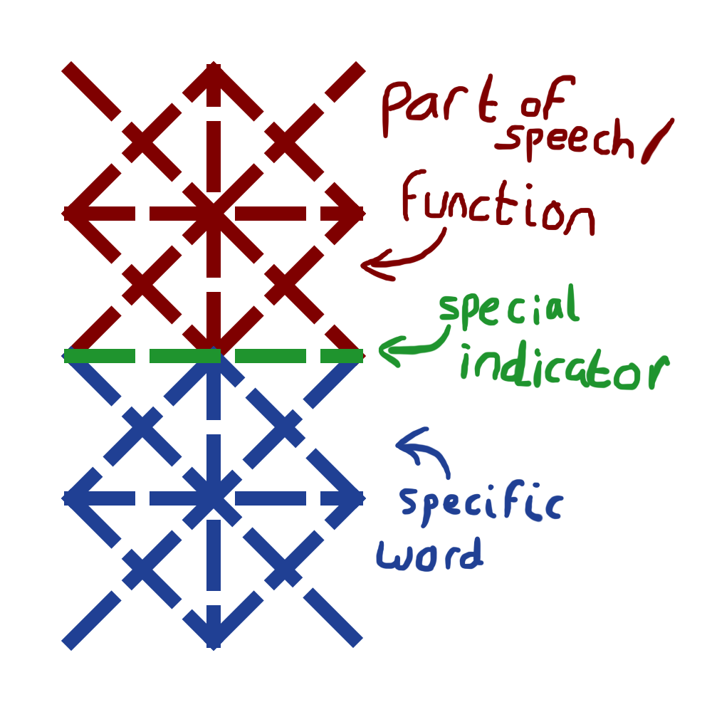
Symbol types
For every single symbol in this writing system, the top half of the symbol determines exactly which kind of symbol that it has. All numbers have the same top half, for example. Here's a helpful summary of each of the different types so far:

Common nouns
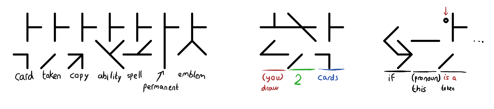

Here are some of the common nouns that are used in Magic cards. As you can see, all objects (the Magic rules term) share the same top half, whereas other non-object nouns share a different top half.
One of these glyphs has a circle that functions as a diacritic. The diacritic functions to take the noun and turn it into a verb. It is exactly equivalent to writing (the glyph for "is") before (the glyph without the circle.) So far, I haven't yet decided on any information that would be determined by the location of the dot, so for the moment you can write it in any corner of the top half. This is why these two top halves consist of only non-diagonal lines, to allow for the dot to go anywhere.
Logograms:
- Card: A rectangle.
- Token: The symbol for "2," since tokens are often created in multiples or are copies of things.
- Copy: The symbol for card + the symbol for 2.
- Ability: Meant to look like a ray shooting from a panel, because abilities are created by cards.
- Spell: The symbol for casting. Meant to look like a ray shooting from a plane, which is meant to symbolize the zone where the spell is being cast from.
- Permanent: A dude standin'. On the battlefield, presumably.
- Emblem: A chevron.
- Turn: A circle, like a clock, with a line showing how much time is being spoken about. I guess in this case the clock is indicating that 9 hours have passed. Maybe this is a particularly long Nadu turn, who knows?
- Cost: Costs are in the top right of cards, and X is a symbol for loss.
- Player: The symbol for verbs which players perform.
- Effect: A small arrow directing forwards in time.
- Phase: Two lines indicating a slice of the nine-hour duration shown by the Turn symbol.
- Step: A very specific pinpoint line indicating exactly 9 o'clock on the Turn symbol.
- Mana: Something arising from a horizon, land.
- Time: A line indicating towards the clock from the other ones.
Types
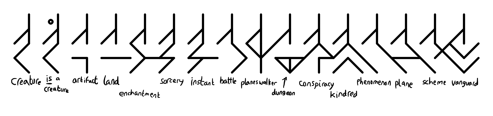
Logograms:
- Type symbol: A card's types are found on the bottom-left part of the top half of a card. Also, includes the symbol for 2 because types are more specific than supertypes but less specific than subtypes.
- Creature: The letter C.
- Artifact: A box.
- Land: A horizon.
- Enchantment: An arrow with a beam extending out of its tip. This also doubles as the symbol for "attach" since Auras are the oldest and most plentiful thing that attaches to things.
- Sorcery: A lightning bolt.
- Instant: A lightning bolt with a line next to it. I wish that instant was a supertype.
- Battle: An arrow going forward.
- Planeswalker: A very simplified planeswalker symbol.
- Dungeon: A land with a down arrow, which doubles as giving the impression of things underground.
- Conspiracy: A question mark.
- Kindred: Two chevrons pointing upwards, indicating a buff perhaps.
- Phenomenon: A very simplified chaos symbol with the center part removed.
- Plane: A very simplfied chaos symbol. The middle part is there to indicate a horizon, because it's a world.
- Scheme: I chose this so that the Ongoing supertype would make the other half of a frowny face.
- Vanguard: A double chevron pointing downwards, like a shield.
Supertypes
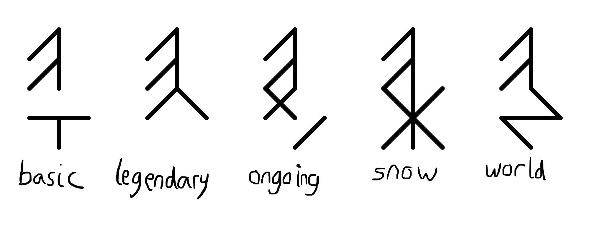
Logograms:
- Supertype: The symbol for type plus the symbol for "1."
- Basic: Goes on lands, so it has the land symbol. The line at the bottom shows how this is below other lands in terms of complexity.
- Legendary: A chevron.
- Ongoing: The other half of the frowny face that Schemes make.
- Snow: A snowflake.
- World: The plane symbol.
Subtypes (and Text)
Fun fact: There are way too many subtypes to ever truly expect someone to memorize them, and the list changes every few months. So instead, I have a different system, where subtypes are made by multiple glyphs that essentially just write the subtype transcribed from English. This is what I more or less completely stole from Tunic.
TUNIC SPOILERS:
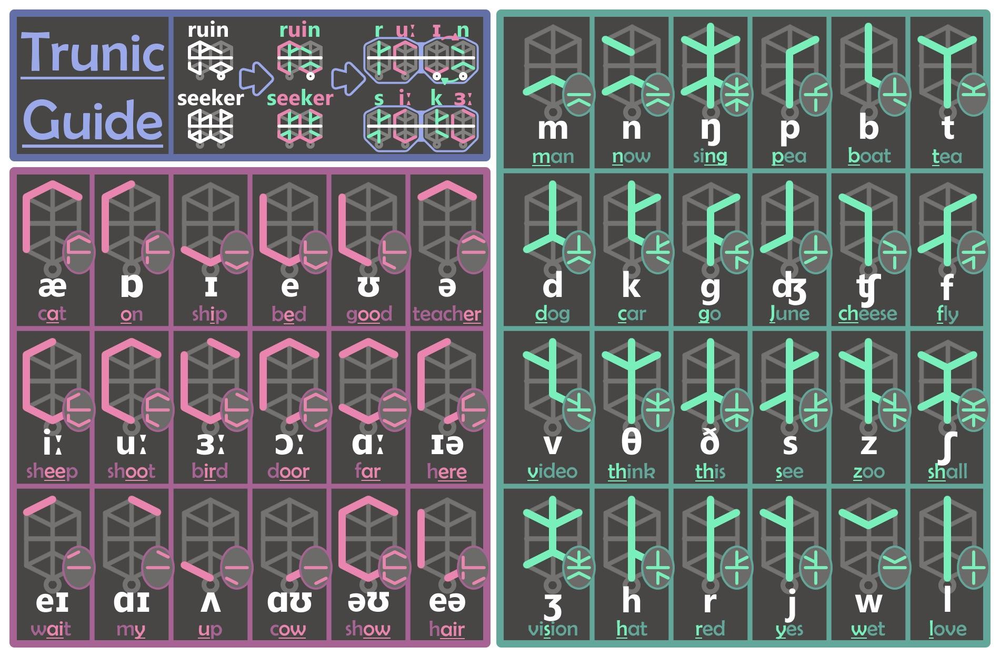
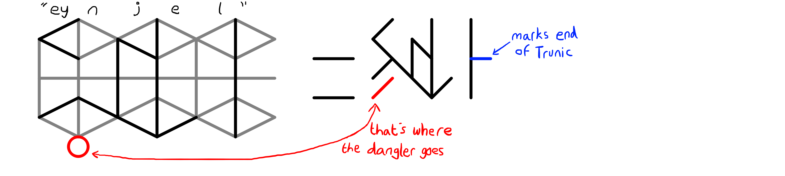
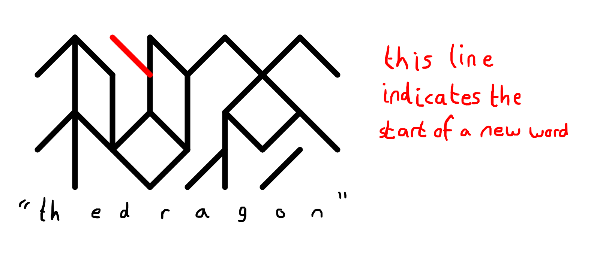
I LOVE Trunic. It's a writing system that provides nothing more
than a framework for taking pronunciation and turning it into
bizarre-looking symbols. It has two shortcomings: some words have
multiple pronunciations, and some words are pronounced the same way. The
first shortcoming doesn't matter very much, and the second barely
matters at all. Luckily, there are almost zero subtypes that are
homophones.
Here's a fun game: Try and figure out which two
subtypes are homophones.
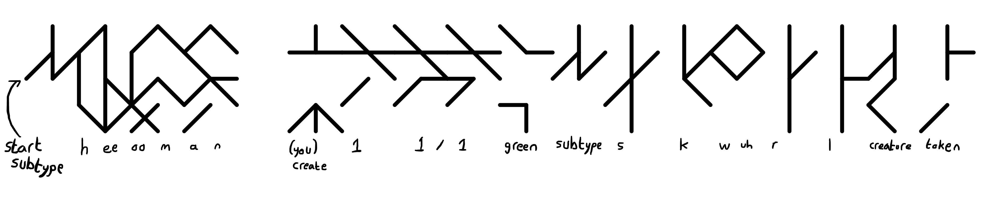
I have considered having some subtypes have shorthand Logograms used in the bottom half of the glyphs. Currently I haven't decided on any. By the way, it was Wurm and Worm.

Now, is it a little weak to differentiate these two subtypes by simply adding a number? Yes. I believe that it's very unimportant to be very exacting with these creature types most of the time. Here, "Wurm" is the first subtype and "Worm" is the second. This is because "Wurm" was added in Alpha and is thereby an "earlier" creature type. I'm imagining that the initial printings of a creature type would lack a number at the end, but later when a similar-sounding subtype is added they could add a differentiating number to the cards which were printed earlier. That way, it's unnecessary to write the number because in its absence there is always an implied "1" at the end of these subtypes.
Numbers
Numbers are handled by a base-20 numeral system. It looks like this:
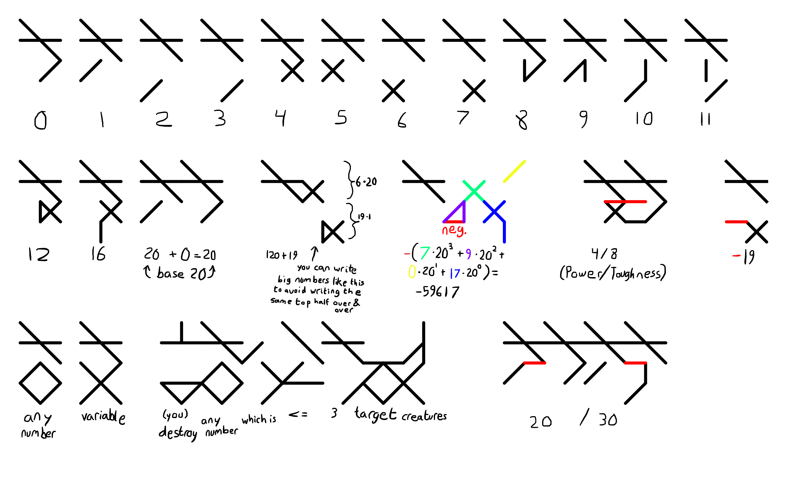
The numerals are modeled after Phyrexian numerals, and consist of just rotating that portion of the glyph around the bottom half to increment it.
In situations where a number's value is a player's choice, the "any number" glyph is to be used, usually combined with other glyphs to specify what qualities the chosen number is allowed to have.
Important: This writing system has NO glyph for the indefinite article, or any articles at all, really. That's "a." There is no "a." There is no "the." You just use "1" or whichever number is appropriate.
Power/Toughnesses appear frequently enough that I included a special provision for them. If you mark the number on the right side of the middle line, that indicates that it's starting a power/toughness phrase. Add a matching line on the left half of the middle line to mark the end of the p/t phrase.
Math & Rounding
I have two special numbers for 1/2 and 1/3, both created by just taking the numbers for 1, 2, and 3 and adding a bar. If you need to create any other mathematical expressions, there are a bunch of operators for that. Exponentiation is included purely for Mathemagics.

Relational operators
Relational operators are denoted with half of the glyph for numbers. Each of the relationships are comprised of the top half of the equivalent symbol in English.

Logical operators
Most of these symbols are derived from the actual Logical operators.

Pronouns
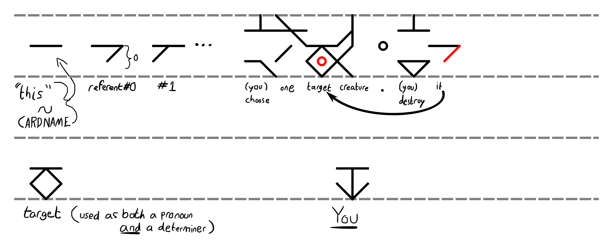
Pronouns are made intentionally limiting and require forthought to use effectively. When referring to a noun that appeared earlier in the sentence, that noun should contain a circle diacritic to mark it as important. This forethought is usually not necessary, as most sentences will still make sense even without them. Since circle diacritics in the top half of a glyph mean "is," (essentially converting a noun/verb into a condition,) this diacritic must go into the bottom half of the glyph.
The glyph that is only a horizontal line represents "this object, this one right here, the object that this text is printed on." Many players would use the symbol "~" in card text for this purpose, and the horizontal line looks very similar to a tilde.
The "target" glyph is also shaped the way it is to allow for those circle diacritics easily being inserted into them. Also, it looks kinda like a bullseye when used this way. However, like the diacritics placed in the top half of glyphs, its exact location within the bottom half is not important. It is just aesthetically pleasing to place the circle in the middle of the target glyph. Some of my original cards I made in this writing system placed the diacritic in the top half, which I believe still makes enough sense to be fine. I just think it would be more proper to use the diacritic in the bottom half when referring to an object this way.
Possessives
There's not much to these, they deserve their own category but there aren't a lot of common in Magic. Even in English we only have a few classes of possessive anyone really uses. So here's a symbol that you can put after a noun to make it possessive.
By default, when you use a possessive to refer to a game object,
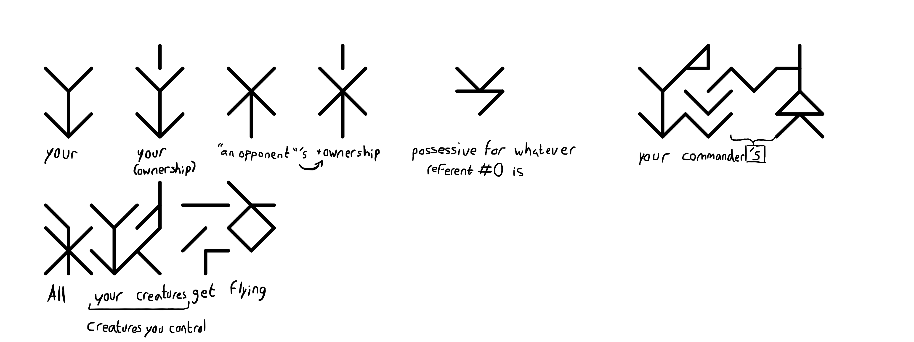
These same "up arrow" and "down arrow" Logograms appear in other categories as shorthand for the possessive. For example, "your turn" can be written with the "turn" symbol on the top half and the "down arrow" symbol on the bottom half. Not all glyphs with the same "up arrow" and "down arrow" symbols on the bottom half are shorthand for these possessives, though.
Adjectives
There aren't very many relevant adjectives in Magic. Note that one of these is actually just created from combining the glyphs for "not" and "this". If you put a circle diacritic on the top half of the "total" adjective, then it can be used as a noun, so you can talk about "the total" of different things.
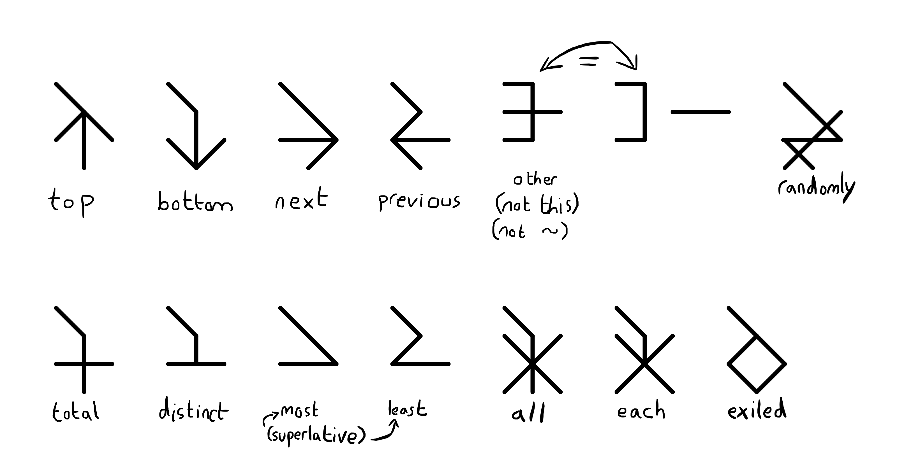
Zones
These are all of the symbols for different zones. There's not that many zones, so this is an exhaustive list.
One note: Since the game essentially never needs to check if something is a library, or similar, using the circle diacritic in the top half of one of these glyphs to mean "is in <that zone>"
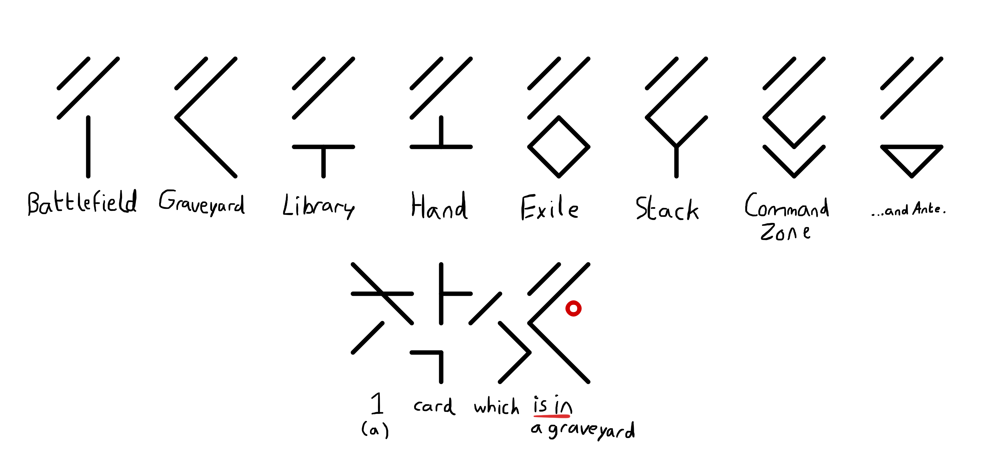
Logograms:
- Zone: The big diagonal line is the middle stroke of the letter Z, and the small line is just there to make it look a little nicer in my opinion.
- Battlefield: The permanent symbol, because this is the only place where permanents exist.
- Graveyard: The symbol for dying, indicating descent.
- Library: Contrasts with the hand symbol. Kinda sorta looks like some bookshelves.
- Hand: Contrasts with the library symbol.
- Exile: A hole, an absence.
- Stack: An arrow pointing down plus a line indicating targets.
- Command Zone: The same double chevron that vanguards and stuff use.
- Ante: If you're playing for ante you "lay down" a card and you can't use it during the game, so there's a barrier.
Prepositions
I probably forgot a few of these, but I know I hit most of the important ones. The top half is as simple as possible, just a single stroke, because these aren't the important words. When writing most text, I find "to" and "on" to usually be unnecessary. For example, instead of saying "this deals 2 damage to them," the symbols here don't make the text any more ambiguous if you write the equivalent of "this deals 2 damage them."
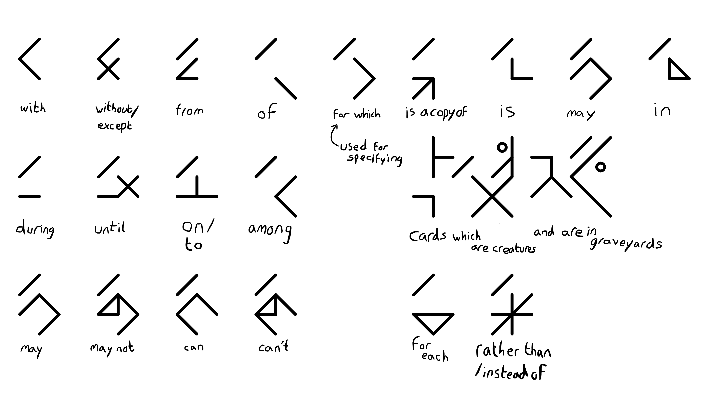
Logograms:
- With / Without: This might blow your mind and knock all of your socks so far off - it makes an X. Woahhh
- During / Until: This might blow your mind and destroy everything you hold dear - there's an X to denote that it ends.
- In: I was trying to make a box in the top right with something in it, but there's only so much room for strokes, so it doesn't look all that great.
- For each: Meant to look like the upside-down A used in mathematics.
- Among: Meant to look like the "subset" symbol used in mathematics.
Verbs (for objects)
I've split the verbs category into separate categories for whether or not it's a player doing it. I probably missed a few important ones, but these are quite a few important ones.
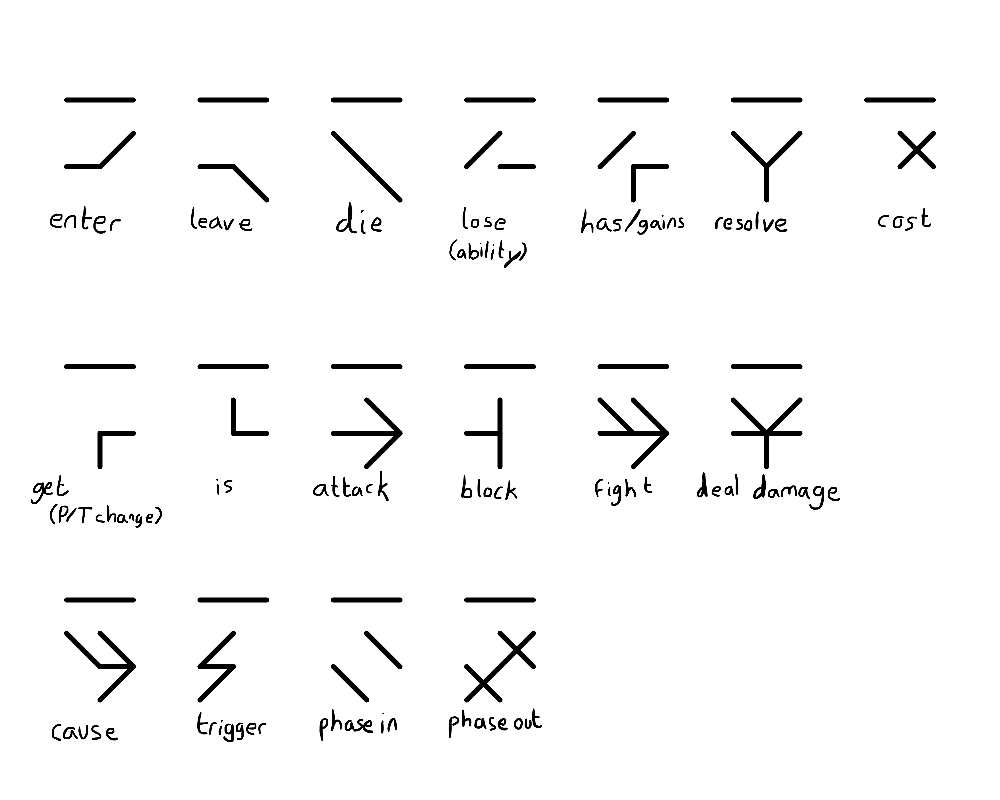
Logograms:
- Enter: Mirrors leaving.
- Leave: A modified die symbol.
- Lose: That bit on the right is supposed to be a minus symbol.
- Gain: That bit on the right is as close to a plus symbol as this resolution allows without messing with the little indicator on the top left.
- Resolve: The stack symbol.
- Get: Plus symbol again
- Is: The same is as the normal operator.
- Attack: A right arrow.
- Block: A line blocking, presumably, an arrow.
- Fight: A modified attack arrow.
Verbs (for players)
This is a much broader category, and I have intentionally left out quite a few verbs. (I have a different system for them.) I still probably missed some important ones. One inclusion I want to mention is "move," which English usually uses the word "put" for. I don't like that. For example, Command Beacon uses the phrase "Put your commander into your hand from the command zone." I dislike that the word "put" contextually means a different thing from its usual meaning (putting counters and things onto objects.) I have a different verb for moving objects from one zone to another here.

Logograms:
- First, I want to mention that a lot of these basic ones use the same basic idea for how they represent each of their verbs' concepts. There are many horizontal lines spanning the middle of the bottom halves of these symbols. Often, (but not always,) the horizontal line represents the player's hand, or the layer of privacy that comes with information they know and other players do not. So often, verbs involving private information or interacting with your hand will use the space below that line, and public information involves the space above that horizontal line.
- Cast: A card leaves your hand, indicated with a rising line.
- Play: This is just cast but more basic, indicated by the same vertical stroke associated with basic lands.
- Discard: A card leaves your hand, but it is indicated with a descending line this time since it's going to the graveyard (which is still in a metaphorical sense "lower" than other zones.)
- Counter: Cast but with an X in it.
- Draw: A card enters your hand and that is generally a good thing, indicated by the rising line. Since the card has not yet been used, the indicator is on the left to indicate an early point in time.
- Destroy: Half of the exile symbol, cut in such a way that it creates a down arrow. I opted not to include the line extending from the "arrow" because there are already a lot of arrows here.
- Exile: A hole. Shares its symbol with the exile zone.
- Sacrifice: Like destroy but with an X, because it gets around so many of the evasion effects in this game.
- Tap: It's a heavily simplified tap symbol.
- Untap: Who knows where I had this idea. It came to me one morning as I lay face down in a shallow creek one morning.
- Distribute: One origin splits into three outcomes, among a narrower range than the symbol for "choose" since it's used very rarely and usually you can only distribute among a very small group of things.
- Activate: The symbol for abilities.
- Attach: An arrow with a line extending from its tip, suggesting a connection between its tip and something.
- Mill: The same descending line as discarding has, but with the same lines as the library zone's symbol.
- Create: A small upwards arrow indicating something rising from nothing.
- Look: The player privately looks at a portion of the information present somewhere. So there's a small cone of vision reaching the horizontal line.
- Reveal: A similar cone of vision, but portraying public information, so it's above the line and wider since it affects all players.
- Search: Looks kinda like a hand reaching out towards a bookshelf, since searching is almost always done towards someone's library.
- Shuffle: The library symbol merged with the chaos symbol, plus a big descending stroke to give the impression of two X's.
- Scry: The library symbol plus two descending strokes indicating the two different places that you can put the cards which you scry.
- Move: The leave symbol that objects use.
- Choose: One origin splits into three outcomes.
- Copy: The symbol for copies.
- Pay: The X is in the top right of the box, which is where card costs go. Also the symbol for "cost".
- Declare: Similar to revealing, it kinda looks like open arms showing/demonstrating something. Here, the arms are on the left, the same perspective used with the attack/block glyphs.
- Name: The symbol for libraries. You usually need to name cards, if anything.
- Note: Just a down arrow. A small piece of information written down somehow.
- Win: Double chevrons pointing up, very good.
- Lose: A big X because you lose, very bad.
- Concede: The "lose" symbol plus a down arrow, indicating that you are the baby that chooses to lose.
- Surveil: The scry symbol mixed with the graveyard symbol.
- Exchange: Two diagonal arrows meeting in the center.
- Double: The stroke in the bottom left is the one from the numeral for "two."
- Triple: Same but it's got a "three."
- Transform: A clockwise arrow indicating a flip.
- Goad: An arrow coming towards the side, indicating that it ain't attacking you.
- Regenerate: The die symbol with an X.
- Behold: Two X's, one on the bottom to indicate the choice to reveal a card in your hand, and another to indicate the choice to choose a permanent on the battlefield.
- Flip: A very loose arrow moving clockwise 180 degrees.
Other Verbs
Obviously I can't set up a different symbol for every possible verb. Even by splitting the verbs into two categories, (verbs players do and verbs objects do,) there's still not enough possible symbols to make each verb distinct. In fact, you might already think that the player-verbs category is too cramped. Magic keeps making more and more keywords, which a lot of the time are verbs. So my solution is this: in any situation where it would be helpful, you may spell out a verb like this.
Just like with subtypes, this system uses Trunic, along with the same indicator to mark the ending of the Trunic text. Here you can also see the stroke that indicates the start of Trunic text. This stroke is optional, but I feel that it helps as a marker for when this text begins. Within the Trunic text of the second example, there is a highlighted stroke which acts as marker of a space between words. You could also just physically write the glyphs further apart to create a space, if you want. I prefer it being condensed.

Colors
Here I'm trying to depict light splitting through a prism. White is the first color, blue the second, and so on. To construct a symbol for "non-[whatever color]" you just add an X. The symbol for multicolored is just the symbol for "greater than or equal to" merged with "2." The symbol for monocolored is the symbol for "equal to" merged with "1." You may notice that I intentionally didn't use the bottom right corner of the symbols very much. This is because I wanted to leave room for other terms if I needed them.
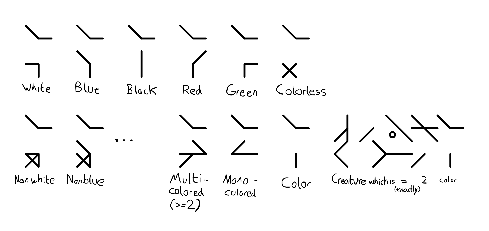
Mana
These are ways of writing all of the different mana symbols, including the difference between colorless and generic mana. Technically I did skip over the {C/W} family as well as the sigular non-colored Phyrexian mana symbol, but you're smart. I'm sure you can figure out how to describe them. Also, if you're using the dark theme, apologies for the incorrect colors on the symbols.
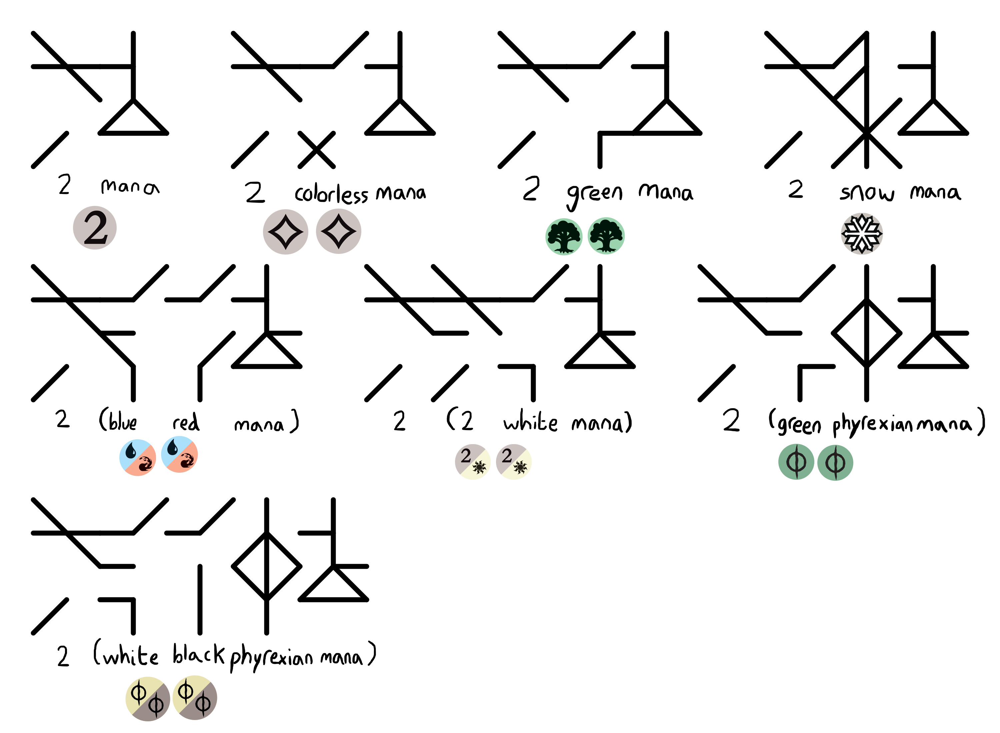
Keyword Abilities
These are all of the evergreen keyword abilities that I decided were used often enough to deserve individual symbols. I am quite happy with them, because I think each of them have a symbol that is fairly memorable once you know how it is derived.
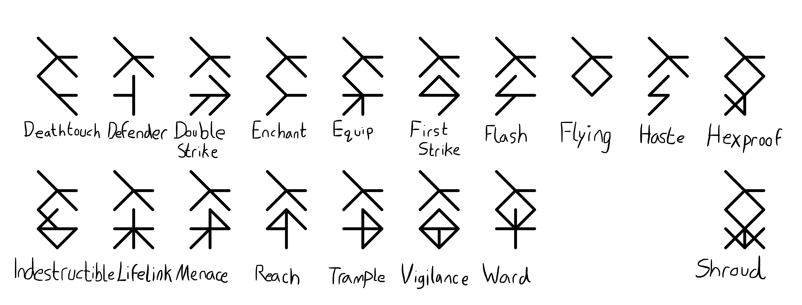

Logograms:
- Keyword abilities: The symbol for abilities plus one of the lines from the symbol for "basic."
- Deathtouch: The symbol for "die" + a line indicating reaching outwards.
- Defender: The symbol for "block"
- Double Strike: The symbol for "attack" merged with the symbol for 2.
- Enchant: The symbol for enchantments.
- Equip: The symbol for enchanting merged with the symbol for artifacts.
- First Strike: The symbol for "attack" merged with the symbol for 1.
- Flash: The symbol for instants.
- Flying: One of those classic V-shaped birds you drew as a kid.
- Haste: The symbol for sorceries, since haste is in a sense making the creature faster, but not instant-speed fast.
- Hexproof: The symbol for the stack and for targeting, plus an X.
- Indestructible: The symbol for "destroy" plus an X.
- Lifelink: The symbol for "life" plus a plus symbol.
- Menace: The symbol for "block" mixed with the symbols for "greater than or equal to" and "2."
- Reach: The symbol for "block" merged with the symbol for "flying."
- Trample: The symbol for "attack" merged with the symbol for "block." Notably, the attack symbol's arrow extends beyond the block symbol's barrier, and the addition of the arrow makes it possible to interpret the blocker as facing to the left, opposite to how it usually is oriented. This gives the impression of the arrow passing through a blocker.
- Vigilance: The symbol for "untap" merged with the symbol for "attack." This makes a pleasantly symmetric result that I'm quite happy with.
- Ward: The symbol for the stack and for targeting, plus a plus symbol, since it's essentially an additional cost related to targeting something.
- Shroud: The symbol for hexproof plus another X, since shroud prevents both you and your opponent from targeting it.
Statuses
The symbols for tapped and untapped mimic the actual symbols used on real Magic cards. Face up and face down are obviously just arrows. Phased in and phased out are both based on the symbol for phenomena, one with a big ol' line through it to negate it. Unflipped and flipped are a clockwise rotation indicating orientation.
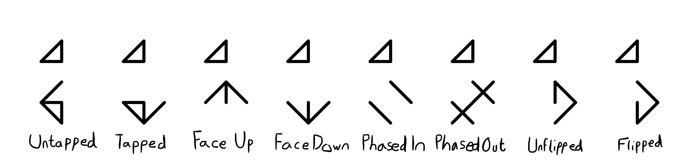
Designations
Designations are a slightly different variety of status, and so the symbol for them is similar. There are quite a few, but I believe I hit most of the important ones. Like with keywords, it is also possible to simply use Trunic text to write out the names of each designation instead of remembering their bespoke symbols.
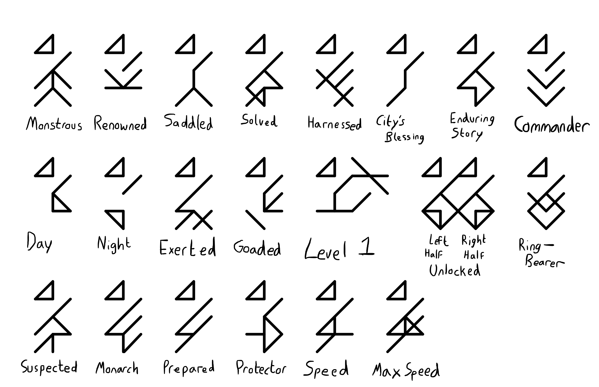
Logograms:
- Monstrous: Two up arrows indicating increase in size, and a line indicating it's a person/creature stick figure receiving this.
- Renowned: A chevron like appears on honors in military, plus a line indicating this as being a relatively small honor, unlike being a commander.
- Saddled: A line on a bump, like a saddle.
- Solved: A question mark with an X.
- Harnessed: The symbol for abilities plus some lines that, I'll be honest, just make it look cooler in my opinion.
- City's Blessing: The symbol for 10.
- Enduring Story: I'm very proud of this one. The symbol for 3, the symbol for artifact, and the symbol for legendary merged into one. It looks like a bookmark!
- Commander: The same double chevron that appears on Vanguards and such.
- Day: As any child will tell you, the sun goes in the top corner of the page.
- Night: Opposite of day.
- Exerted: The symbol for haste plus an X.
- Goaded: The symbol for goad. Depicts an arrow approaching something off to the side.
- Level: A horizontal line with a line over it indicating being above a separation.
- Unlocked: Obviously the left/right strokes indicate left/right, but the circle with a vertical line in it is a keyhole.
- Ring-bearer: A ring on a necklace.
- Suspected: A question mark with the number 2 in it, because menace.
- Monarch: The symbols for "1" and "card" merged, plus two lines pointing to the top right to give the impression of a crown (with its points going to the top right.)
- Prepared: The symbol for sorcery plus a rising stroke to indicate readiness.
- Protector: The symbol for block pmerged with the symbol for battles.
- Speed: The symbol for haste merged with the symbol for level.
- Max Speed: The symbol for speed plus an X on top.
Turns, Steps, and Phases
These all use the same iconography established by the basic noun forms of turns, steps, and phases. These include two useful turns of turn phrasing (not to be confused with turn phasing): "end of turn" and "your turn."

Triggers
I've always disliked that triggers have three different words that start them and all of them mean the same thing. Instead, the marker that this is a triggered ability is between the condition and the effect, meaning that it's right where the comma goes on English cards' triggers. I like this because it makes it slightly harder to see whether an ability is a triggered ability, which meshes with the whole goal of being condensed but arcane.
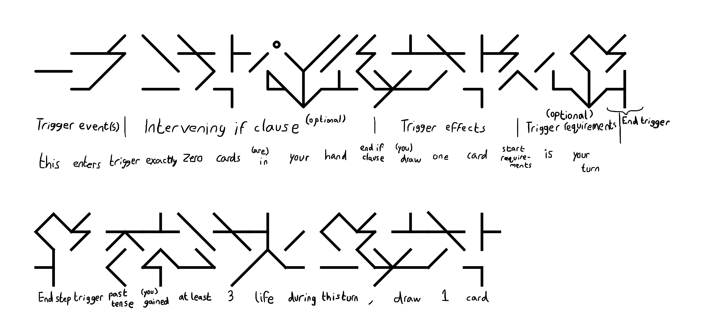
In general, a triggered ability is written as "[event] [trigger symbol] {optional: [intervening if clause] [end if clause symbol]} [effects] {optional: [start trigger requirements symbol] [requirements]}"
This means that your average triggered ability will contain just additional symbol, which has a gap on the right so there's a small space in the text between the end of the trigger event and the start of its effects.
Notice in the second example here that there's no word marking that the trigger only occurs at the "beginning" of the end step. There are no turn-based triggers in the entire game that don't trigger off of a step or phase beginning. There are some triggers that trigger upon you doing one of the actions that happen at the start of these steps, and for those, you should use more specific wording.
Delayed triggers
I wanted to have a symbol for denoting the start of a delayed triggered ability, because the starts and ends of triggers can otherwise be kinda complicated. Like usual, you can use the center line to mark the beginning of this clause and another at the end.

Modal stuff
This language is very much designed to be compact yet still fully descriptive. So, when writing modals, you can, if you want, write the whole thing on one line. Though, since it is all one big long ability, it must be written without spaces between the lines.
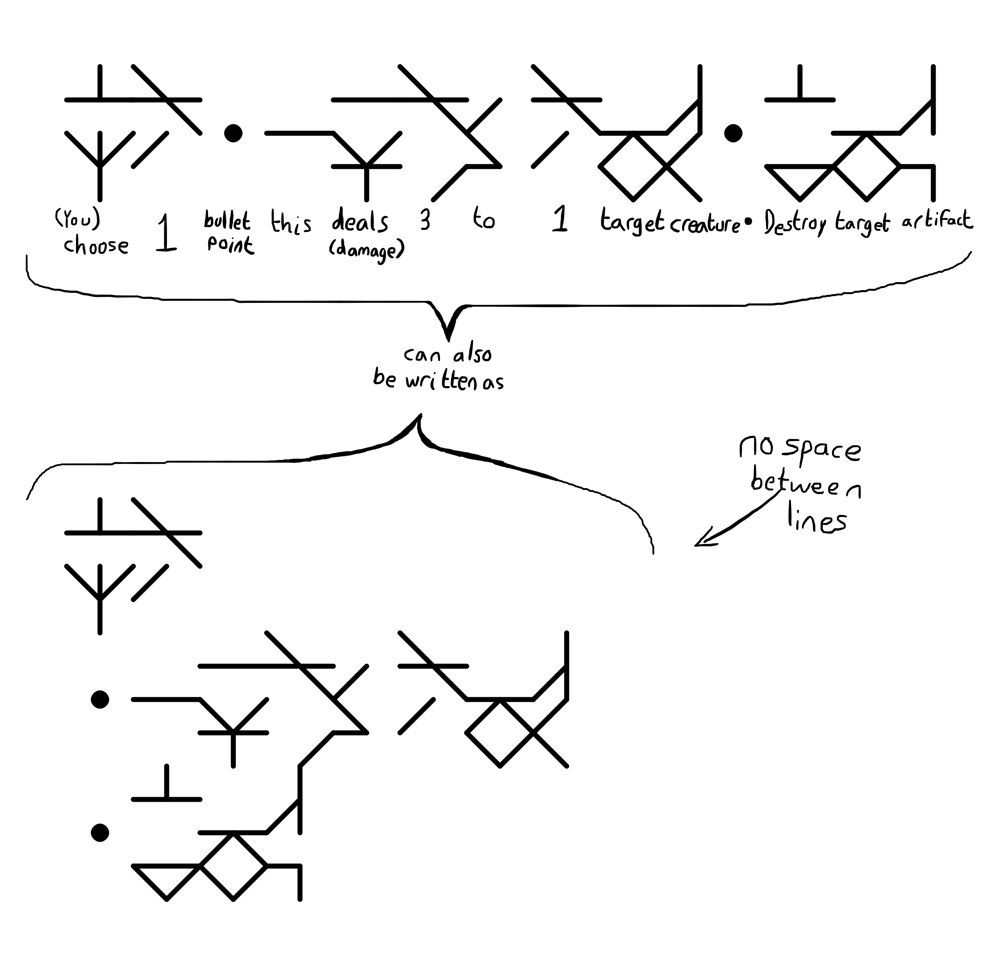
Replacement Effects
The game can have some fairly complicated replacement effects, so I've included symbols for starting the beginning and the end of each. There are a few meaningfully different kinds of replacement effects, which here you can use separately or combine them into a big long complicated replacement effect if you need to. There are replacement effects that fully swap one action for another, effects that add to or modify an action somehow, and effects which prevent things. Prevention effects fall under that last category. The word used here for "prevent" can also be used as a verb, usually when marking when damage can't be prevented.
In the Gisela example here, I mark specifically which action from among the first half of the sentence is being prevented. This is optional, but I feel like it's helpful in cases like this where the damage being prevented is a somewhat complicated amount. Also, notice that here I'm using the pronoun "it" to mean "the amount of damage dealt" instead of "the action of dealing damage." It's more accurate to say that the sentence ends with "prevent half rounded up of that damage-dealing." I've decided that this is an acceptable and close-enough interpretation.

Tenses
Tenses are rarely important in Magic, but they do come up sometimes in conditions and such. I only included the simple ones.
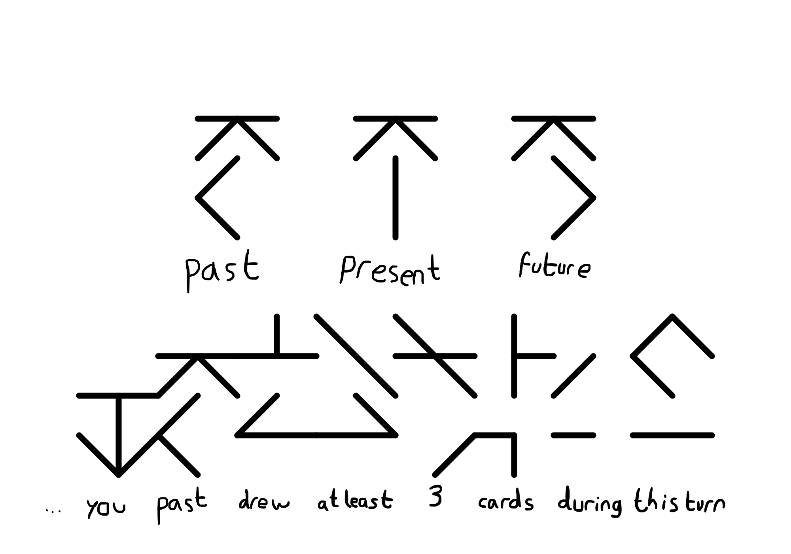
Characteristics
This category includes Power, Toughness and every other charactertistic, plus "full text" to describe Volrath Shapeshifter. Before you try to catch me out on Exchange of Words, I already thought about that: that card only exchanges rules text, which is fully describable with these words.
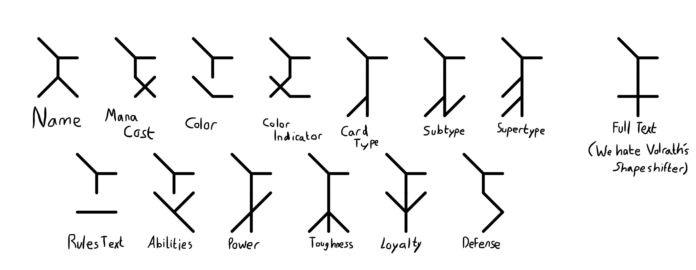
Cost alteration
These two symbols can be used to add or subtract from a cost. The top half of the symbol is the symbol for mana, but this can be used for any cost.

Static Abilities
There's very little to say about how static abilities are formatted. The main important point is that I think you should probably include a number or determining adjective for the first noun (the subject) of the sentence, though an implied and unspoken "all" or "each" probably still makes sense to people. I like including it. The previous example, in the Cost Alteration section, is a good example of what feature I'm talking about here.
Activated Abilities
These two symbols, similar to how triggered abilities are formatted, dictate where the parts of the activated ability start and stop. One note about the way untapping is formatted is that, like like in English, "untap ~" can be shortened into a single symbol. This does have a separate rules meaning from when the instruction is spelled out without the symbol, because it interacts with summoning sickness in an odd way. See rule 302.6. If you write the implied "this" symbol into the cost, then that meaningfully changes the interpretation of its rules.

Ability / flavor words
Very rarely, abilities do need to have some random word stapled to the front of them for rules purposes. This writing system also staples them to the beginning of ability text, but it doesn't have italics, so it differentiates meaningful ability words from meaningless flavor words by using symbols for either "ability" or "text" here.

Anchor words
Even MORE rarely, text needs an arbitrary word attached to the start AND attached to some other spot in the middle of another ability. Here is the full text of one of the more popular cards which do this, Windcrag Siege, as an example of how to write these anchor words.

Abilities within quotes
Despite having a quotation mark punctuation symbol, it isn't usually very necessary to write them to mark the beginning and end of abilities within other abilities. Instead, my solution here is to write a symbol that marks the beginning of an ability, and use the combining parentheses-like punctuation marks to delineate where an ability begins or ends. Here's the full text of Reef Worm, a card which actually nests one ability into a second ability into a third ability. If you count the parentheses, you'll see that there are 2 opening parentheses and only 1 closing parentheses, because the other parentheses' ending is implied by the text ending. The first closing parenthesis was optional too, because it also would have otherwise been implied by the end of the text.

Punctuation
The main important piece of punctuation is these two marks which can be combined with nearly any symbol in the entire writing system to group ideas together. Similar to how commas can delineate ideas, and even more similar to how parentheses or brackets place clear boundaries between parts of a sentence of expression, these marks can help to remove ambiguity from the reader's interpretation of the writer's intent. In a writing system as devoid of clarifying words or phrases as this, I find these symbols incredibly helpful to convey ideas in a way that I believe is more difficult to misconstrue. You can find many examples of these symbols in actual sentences used in other examples throughout this guide.
It is important to note that since these punctuation symbols are on the central horizontal line, they can be combined with nearly any symbol. The only exceptions are pronouns and possessive pronouns. If it's for whatever reason necessary to start or end a grouping on those symbols, I would recommend simply not combining them, and writing them separately from each other.
Unlike actual mathematical parentheses, here it is unnecessary to have an exactly equal number of starting and ending "brackets." These symbols merely exist to help guide the reader's understanding, and it is not necessary to include a starting symbol whenever an idea starts or an ending symbol whenever an idea ends. For example, I like to use the ending symbol to mark the end of the text within a subtype, but when a subtype begins, as in a type line for example, I don't believe it's necessary to include an extra stroke to signal to the reader that a subtype is starting.
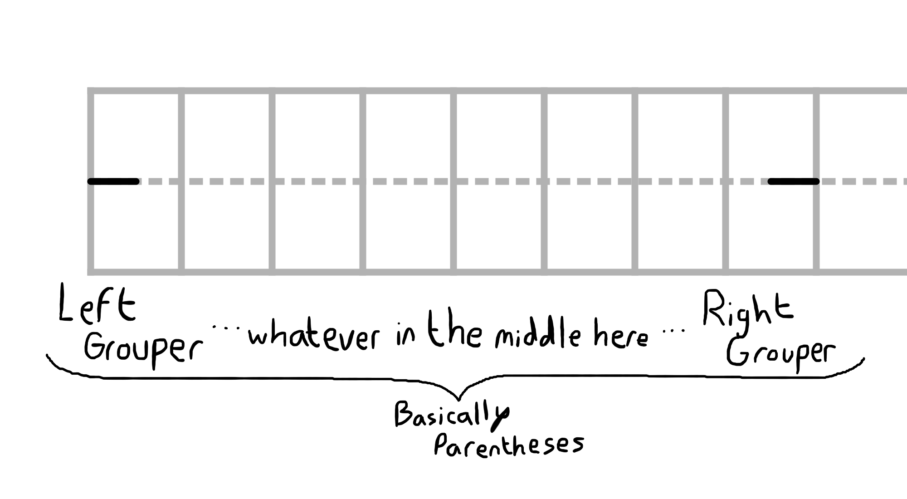
These other punctuation marks are much simpler. I try and avoid using these in card text unless necessary, because I feel like they make it much easier to see the points where the text stops and starts between ideas.
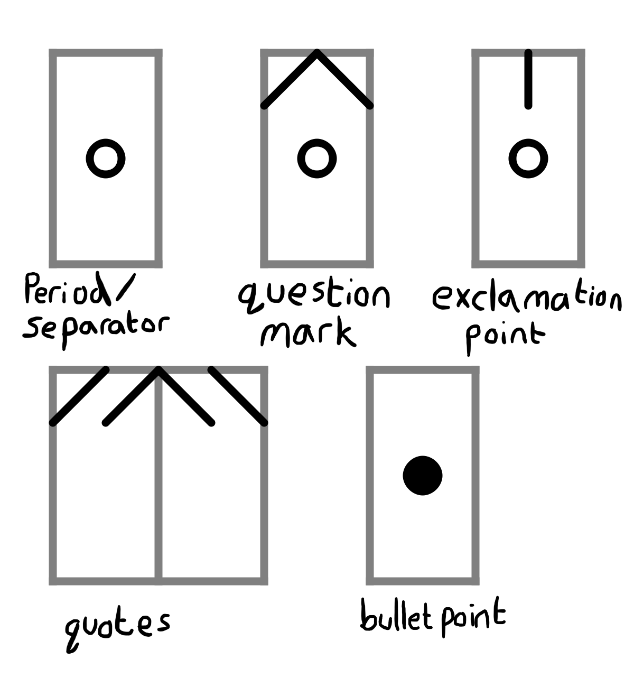
Other formatting quirks
I would recommend always leaving a small space between each ability, but writing each line of one ability together so that there's no confusion regarding whether text is describing a very long ability or two smaller abilities.
For stuff like names and flavor text, I personally like to include the symbol for "misc text" which can be found in the list of symbol types at the top of this guide. This is almost entirely unnecessary, because obviously the reader knows that the name starts and ends within the name box at the top of the card.
Again, the core ideas with this writing system are that it is A) compact, B) still fully descriptive, and C) it's more inscrutable to an onlooker because the symbols look similar. To the effect of that last point, I hope that this far into this guide you've become quite familiar with the top halves of each symbol. There's not all that many. You may have also noticed that Trunic text is the only text which I've shown to be able to place lines on the left edge of the symbol. This means that the top and bottom edges of each symbol, as well as the right edge of the final symbol in a line, are free to include more information. If you want, you can write lines there to represent either additional formatting information (such as a line separating two lines of text, or a highlight, or anything like that) or you can just write confusing lines there if you prefer.
Examples